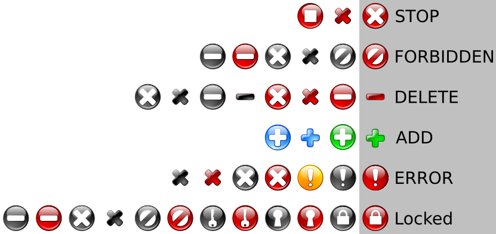

OpenOffice.org CrystalSVG iconset guide
Recommended color space
doc/base.svg contains the recommended color gradients
to be used in the OpenOffice.org CrystalSVG icons. You can open it in Inkscape and start designing ;)
Recommended symbols and indicators
Many symbols fit easily for most of actions like ADD, DELETE,
etc. so ideally we should use a different symbol as a standard for each action.
This would hopefully prevent a situation where the same symbol means a lot of
different things.
There are more possibilities:
- KDE already uses the red circle x for STOP (e.g. in konqueror)
so we should do the same. Another possibility is a square, which usually
represents stop on most tape and CD players. Red is associated with stop
as well.
- For the ADD and DELETE
icons could be used in a circle or out depending on where it is being used
to help it stand out if necessary. We prefer the symbol by itself as
the default; red for the DELETE action, as the black evokes a
stronger "this is not allowed" or "disabled" feeling.
- For the ERROR red exclamation mark should be used. Red circle x
(as in STOP) could work here as well to be consistant with the
indicator in the KDE error message boxes.
- For the LOCKED icon a padlock in or out of a circle seems to be the
most commonly used for this action.
- ADD is pretty much a given. It's usually blue, green, or black;
we prefer green.
- FORBIDDEN is widely indicated with a circle-slash.
The recommended choices are highlited in the following image:

{kind=link}